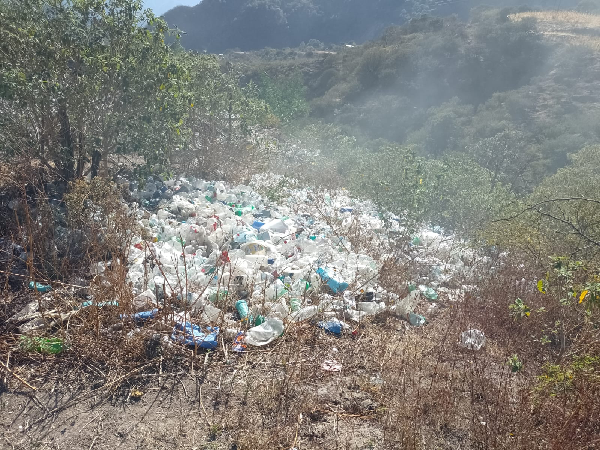
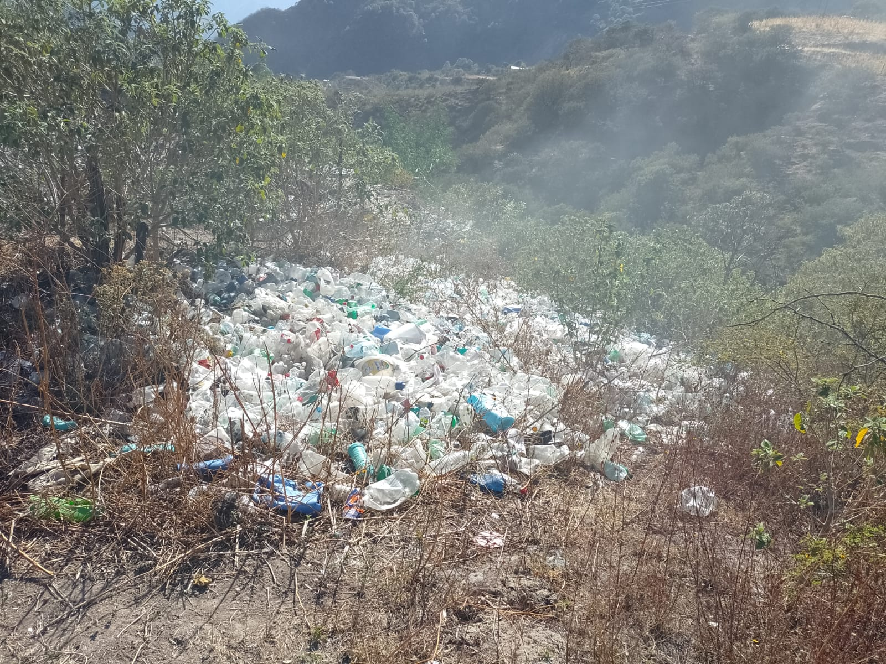

Impacto de la Contaminación
La contaminación en Topia afecta la calidad del agua, el aire y la vida de los habitantes. Es importante tomar acción para minimizar el impacto.
Conoce el problema y cómo podemos ayudar a nuestra comunidad.
Descubre cómo ayudarLa contaminación en Topia afecta la calidad del agua, el aire y la vida de los habitantes. Es importante tomar acción para minimizar el impacto.
